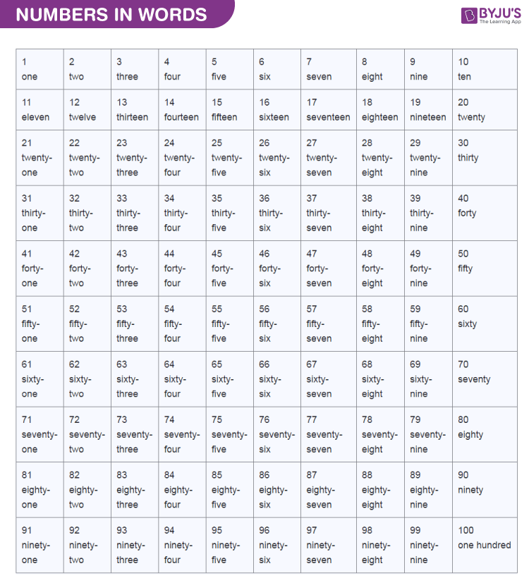

Mathematics is the science that deals with the logic of shape, quantity and arrangement. Math is all around us, in everything we do.It is the building block for everything in our daily lives, including mobile devices, architecture (ancient and modern), art, money, engineering, and even sports.Mathematics includes the study of such topics as quantity, structure, space, and change.Mathematics, the science of structure, order, and relation that has evolved from counting, measuring, and describing the shapes of objects.
A number is a mathematical object used to count, measure, and label.A number is a count or measurement.We use numbers in our day to day life. They are often called numerals. Without numbers, we cannot do counting of things, date, time, money, etc.Sometimes these numbers are used for measurement and sometimes they are used for labelling.
Example-:1,2,3,4,5,6,7,8,9,10 etc.
The numbers can be classified into sets known as the number system. The different types of numbers in maths are:
The list of numbers in words from 1 to 100 is given below:
1.)Addition
2.)Substraction
3.)Multiplication
4.)Division
When two or more than two number combines with each other to form a new number then this property is know as addition.
This properties gives you a knowledge how the next number is formed.
Example-: 1+1=2,2+8=10
etc.
When two or more numbers substract with each other to form a new number the this property is know as substraction.Substract means to minus one number from another number.It decreases the value of one number with another.
Example-:4-2=2,2-2=0,6-3=3;
When two or more than two numbers muliplied with each other to form a new number then this property is known as multiplication.Multiplied means when number is going to increase its value by self means addition of same number with a number then this give a cause that the number is being multiplied.
Example-:2*2=4,3*3=9.
The above example shows that 2 is a number when multiplid itself as the same results in its multliplied number 4.Similalry,3 is a number when multiplied with itself as same number then results in multilplied number 9.
When two or more than two number divides with each other then this properties is know as division.Divides means a number which going to be operated then finds the number in it's Table and gives the answer as division number.The actual meaning of the division is that parts the number or area that belong to same number or region.
Example-: 4/2=2,18/3=6.
The above example explain that 4 is a number that is going to be divide by 2 and gives the division number as a result.